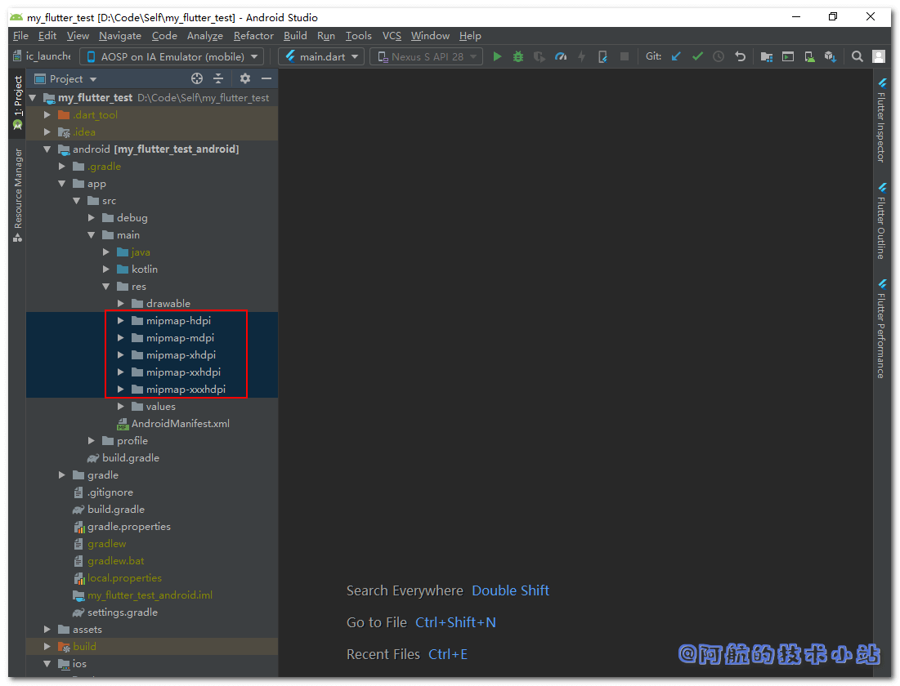

在APP上线前, 我们肯定需要修改APP的启动图标. APP图标代表了它的品牌, 增加了辨识度. 让用户可以在手机的APP列表内快速找到你的APP. 所以本篇博客将记录修改Flutter 的APP图标/启动器图标的全过程.
Android图标
查看初始图标
打开目录./android/app/src/main/res, 你会发现有如下几个目录:
mipmap-hdpi
mipmap-mdpi
mipmap-xhdpi
mipmap-xxhdpi
mipmap-xxxhdpi
如图:

当你打开每个文件, 会发现每个图标都是这张初始图片:

图标尺寸规范
我们需要准备以下图片:
| 对应目录 | 尺寸 |
|---|---|
| mipmap-mdpi | 48×48 |
| mipmap-hdpi | 72×72 |
| mipmap-xhdpi | 96×96 |
| mipmap-xxhdpi | 144×144 |
| mipmap-xxxhdpi | 192×192 |
图标命名规范
它们的文件名通通是ic_launcher.png!
图标目录结构
目录结构:
./android/app/src/main/res/mipmap-mdpi/ic_launcher.png
./android/app/src/main/res/mipmap-hdpi/ic_launcher.png
./android/app/src/main/res/mipmap-xhdpi/ic_launcher.png
./android/app/src/main/res/mipmap-xxhdpi/ic_launcher.png
./android/app/src/main/res/mipmap-xxxhdpi/ic_launcher.png
替换完成后, 重新运行你的Flutter项目. 看看你的调试设备的APP启动图标, 你应该就可以看到修改的结果了!
感谢
结语
如果你对本篇文章有任何问题, 欢迎在下方评论区, 进行讨论, 或加入阿航的技术小站交流群
欢迎访问阿航的技术小站 官网, 获取更多技术干货!